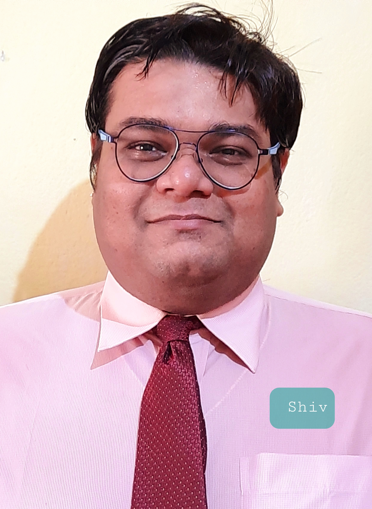

Welcome to my professional portfolio
To secure employment with a reputable organisation, where I can utilise my skills and business studies background to the maximum.

I am Dr. Shiv Sankar Das, a multifaceted professional holding a PhD, an MBA specializing in Human Resources and Marketing, and a foundational B.Tech in Mechanical Engineering. I bring a unique interdisciplinary approach to problem-solving, strategic management, and clean energy rural development.
Years Experience
Journal Publications
Patents Filed
Major Awards
Centurion University of Technology & Management, Odisha
Zenith School of Management (BPUT), Rourkela
Centurion University
KPSAR ENGINEERING WORKS
Humboldt Wedag India Ltd
Centurion University of Technology and Management
Title: "Diffusion of Clean Energy Products in Rural Areas of India - A Case Study of Odisha"
Siksha ‘O’ Anusandhan, Bhubaneswar
Performance: CGPA of 9.2
Orissa Engineering College, BPUT, Rourkela
Specialization: Mechanical Engineering | Performance: CGPA of 7.18
Bhubaneswar
XIIth: Prabhujee English Medium School (57%)
Xth: DAV Public School (64%)
Provost Award from Centurion University of Technology and Management (2024).
Best Researcher Award in the Area of Clean Energy for Rural Development from BNI (2025).
International Excellence Award in the Field of Environment by MSME, GoI (Dec 2023).
Best Researcher in Environment Science at WCISE’21 International Award (Sep 2021).
Certificate of Excellence as Best Researcher Award by Scifax, Sciencefather (Feb 2022).
My extensive research spans clean energy diffusion, organizational behavior, marketing strategies, and mechanical engineering applications for rural development. Scroll through the database to explore my published work and conference presentations.
Ex-VC, Centurion University, and Director, Klorofeel Foundation, Bhubaneswar
XLRI, Jamshedpur